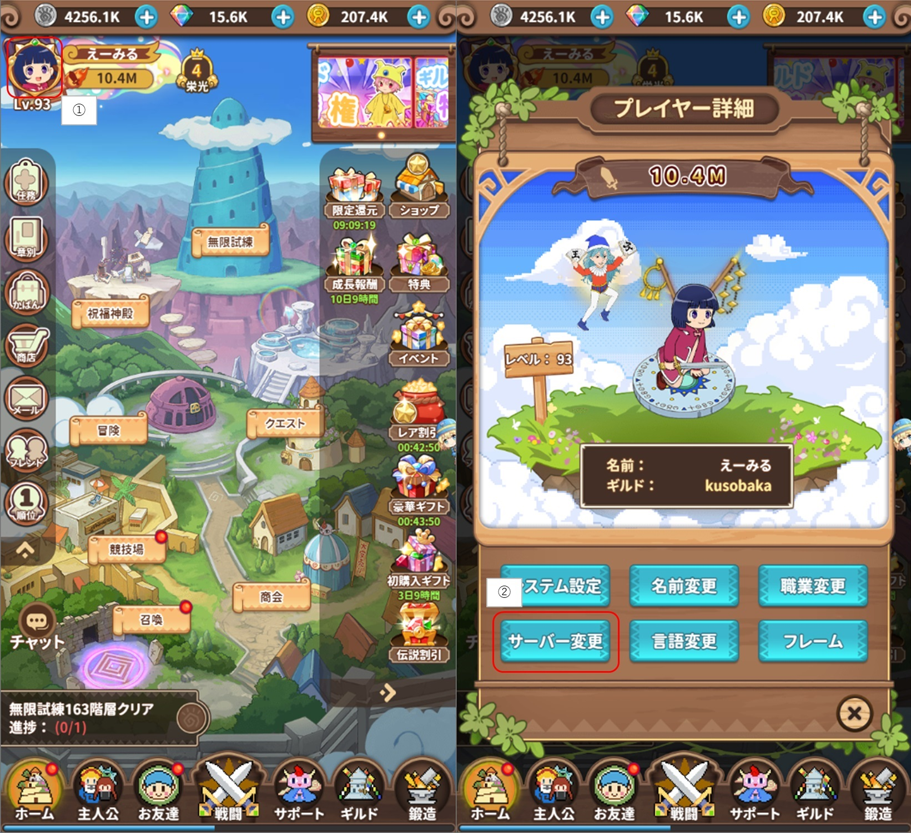
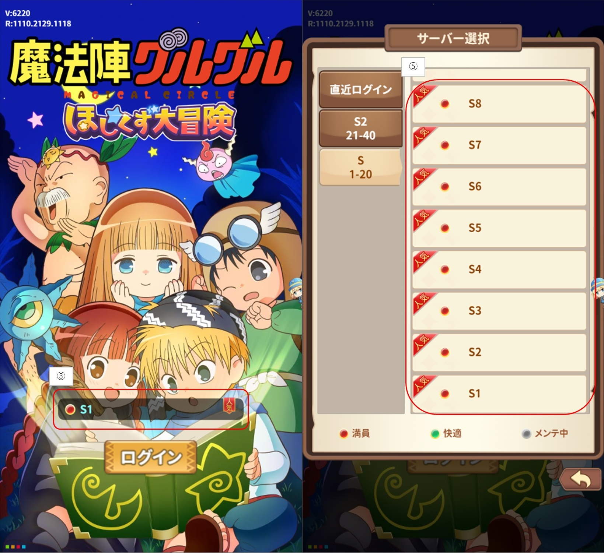
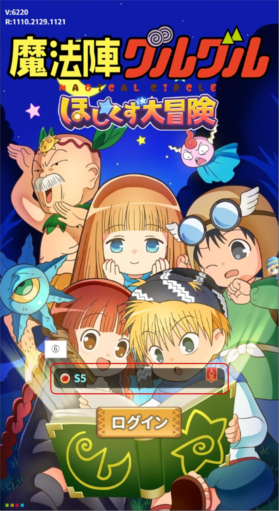
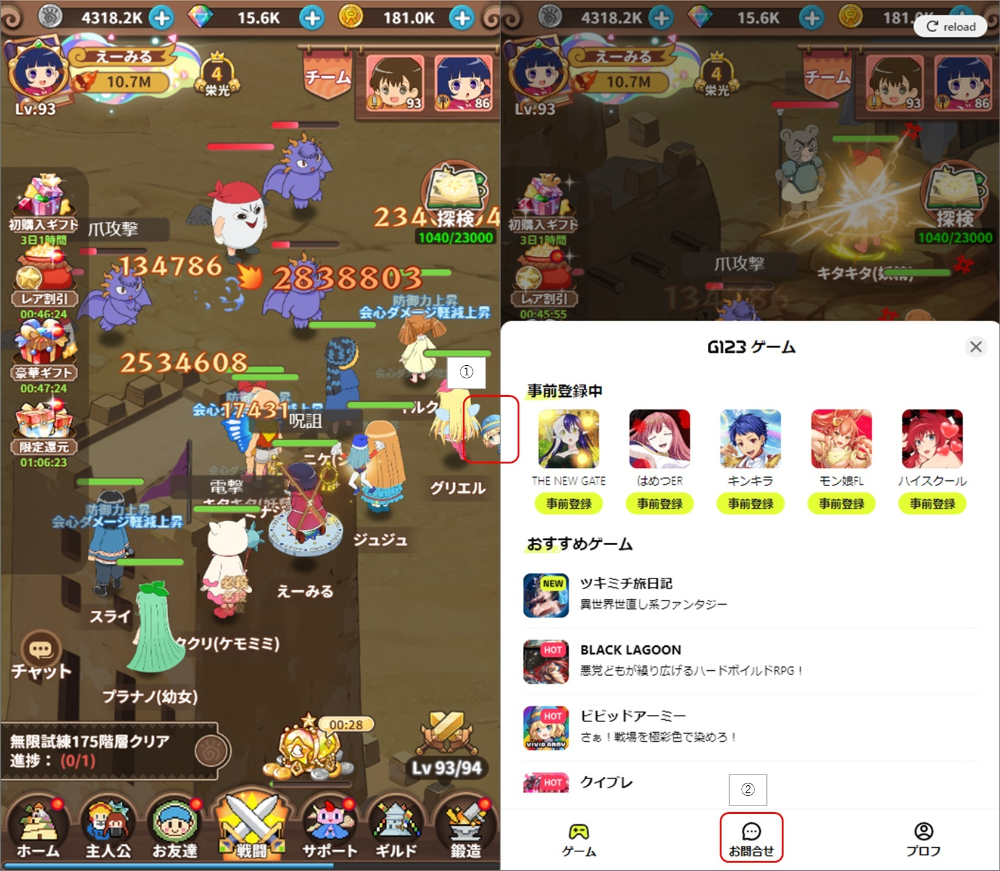
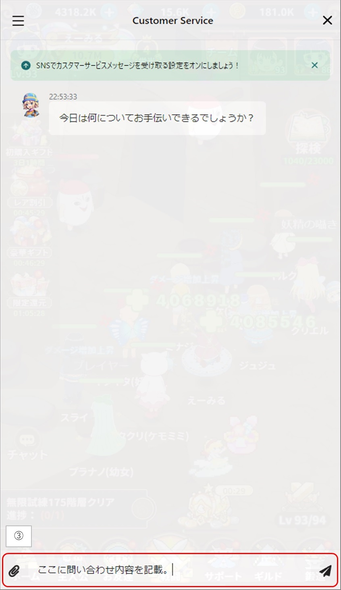
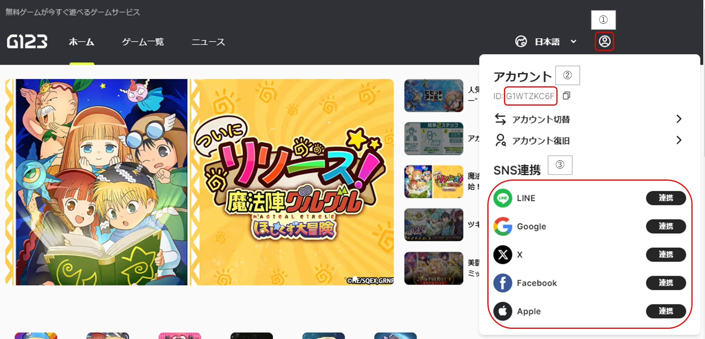
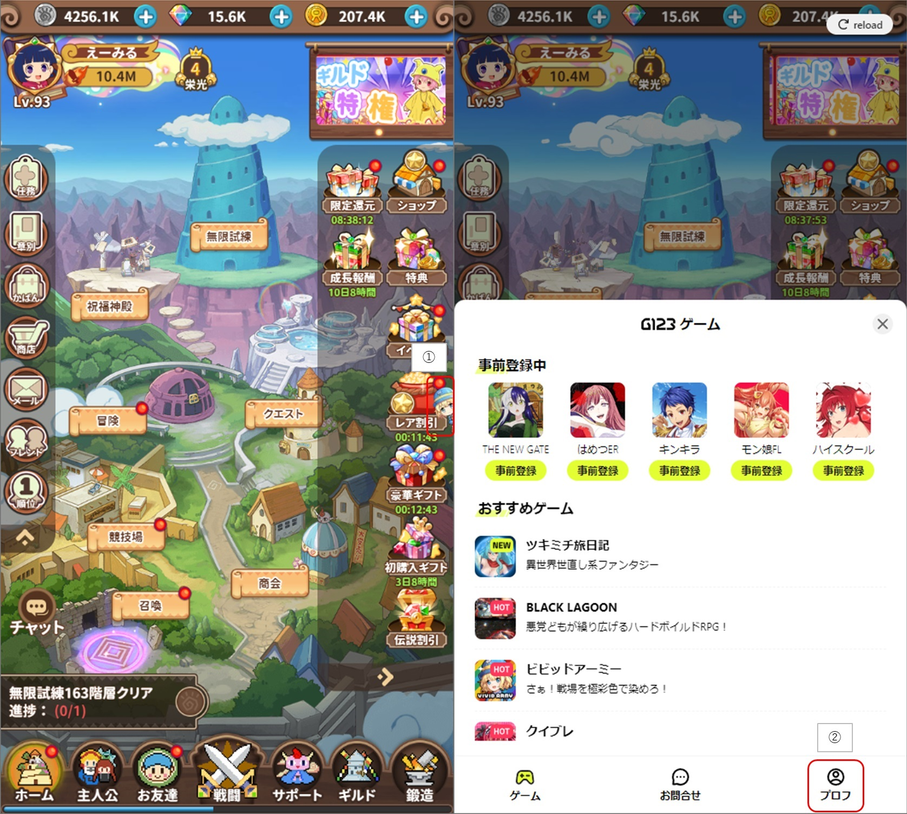
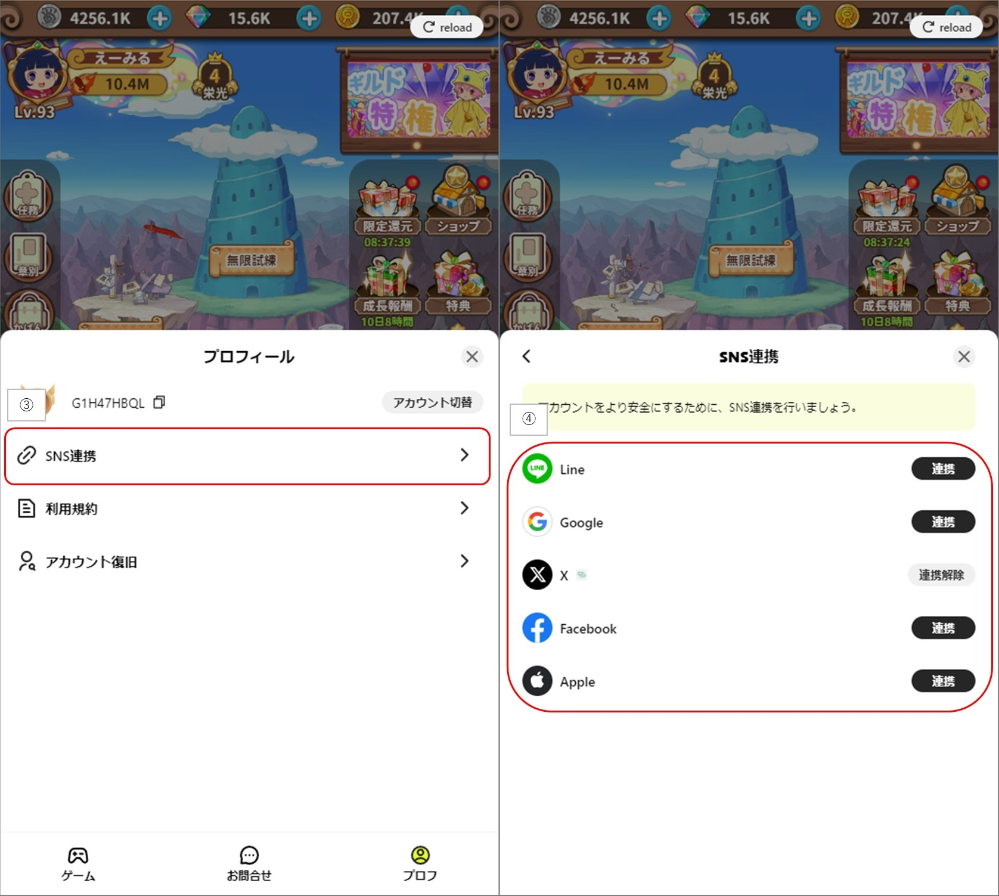

初めに知っておこう
・ゲームの仕様
この手のゲームは、複数サーバーが用意されます。
1つのサーバーがいっぱいになると新しいサーバにて新規にゲームを始めることになるので、
FF同士でフレンドになったり、ギルドに入りたい等の希望がある場合は同じサーバーである必要があります。
また、サーバー間でのデータの移行は無理なのでよく考えてからゲームを始めましょう。
・サーバー変更手順
１．①の『アイコン』を選択します。
２．②の『サーバー変更』を選択します。
３．③の『ログインしているサーバの箇所』を選択します。
４．④の『任意のサーバー』を選択します。
５．⑤の箇所が選択されているサーバーになっていることを確認して『ログイン』を選択します。
ユーザー情報がある場合は続きから、無い場合からは最初からになります。
※序章をクリアすると同様の手順でサーバー変更が可能です。
・G123の仕様
G123はサイトにアクセスした時点でアカウントが自動的に作成されます。
そのため、ブラウザのキャッシュ等を消さない限りはずっとそのアカウントで遊ぶことが可能です。
ただし、キャッシュが消えた場合や、携帯電話やパソコン、又はブラウザを変更した場合は
その情報が残っていないため同じアカウントで遊ぶことができなくなります。
それを回避するために、まずはSNS連携を行いましょう。
ただし、課金をした場合は課金情報が残っているため運営に連絡をすればアカウントの復旧が可能です。
・問い合わせ方法
※ゲーム内からしか問い合せ欄が無かったのでゲームを初めて下記手順を踏んで下さい。
ゲームにログインして①の『ビビッドアーミー』のキャラを選択します。
G123ゲームが下からびよーんって伸びて来るので②の『お問合せ』を選択します。
③に問い合わせ内容を入力して、飛行機を飛ばしてください。
・SNS連携方法
・ゲームを始めておらずSNS登録をしていない場合
１．『コチラ』にアクセスすると上記の画面が出ます。
２．①を選択してアカウント情報を表示します。
３．②の箇所は自動で作成されたアカウントのIDです。
４．③の箇所から好きなSNSを選択して連携してください。
・ゲームを始めていてSNS連携をしていない場合
１．ゲームにログインして①の『ビビッドアーミー』のキャラを選択します。
２．G123ゲームが下からびよーんって伸びて来るので②の『プロフ』を選択します。
３．③の『SNS連携』を選択します。
４．④の箇所から好きなSNSを選択して連携してください。
・ゲームを始めておらずSNS登録をしている場合
１．『コチラ』にアクセスすると上記の画面が出ます。
２．①を選択してアカウント情報を表示します。
３．②の箇所は自動で作成されたアカウントのIDです。
４．③の『アカウント切替』を選択します。
５．④のダイアログが出るので連携済みのSNSアカウントでログインしてください。
Use Tools
魔法陣グルグル ほしくず大冒険のプレイは『コチラ』からどうぞ